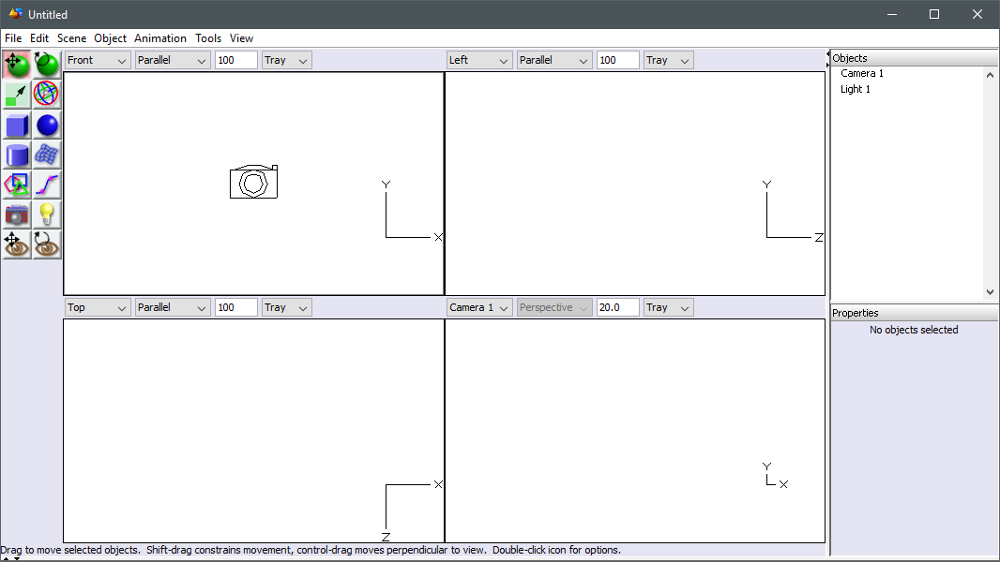
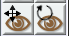

The main window of Art of Illusion is called the "Layout Window".
When you launch the software the firts time, the Layout Winodw appears like this. The local language will be selected automatically if a matching translaton is available.
We recommend, that you have a look at the User preferences and the Interface enhancement sections.
On the top of the window you can see the menubar.
The menus provide access to everyhing, that can be done with the software. The content of each menu will be introduced later in the manual, where each function is explained.
On the left you can find the tools pallette. The pallette contains tools for:
Each object type comes with their dedicated editors or property dialogs, where detailed edithing happens.
Normally, you'd handle the views by the mouse buttons, scroll wheel and modifier keys but on the toolbar you can find two icons, 'move' and 'rotate' for view handling.
If you select one of these tools, dragging on the view the left mouse button will perform the move or rotate. The icon activated tools also work in stylus or finger use on touch operated devices.
Please have a look at Using views, Mouse functions and Keyboard Shortcuts. Even though you will easily find the basic fuctions of the mouse just by experimenting, there is a lot more there, that you will be very helpful, when you start to become more familiar with Art of Illusion.
On the right you have the object list and the object properties panel. Both of those can be undocked and redocked.
On the object list you can see the contents of the scene. On the list you can select the object for operations, change their visibility on the scene or arrange the objects to have a suitable parent/child hierarchy. Otherwise moving objects up and down on the list does not change their order in the model data.
The Object Properties panel containd information about the currently selected object(s). Some of the setting, like the position and orientation of each object, are editable or accessible directly on the panel. What is accessible tepends on the object type.